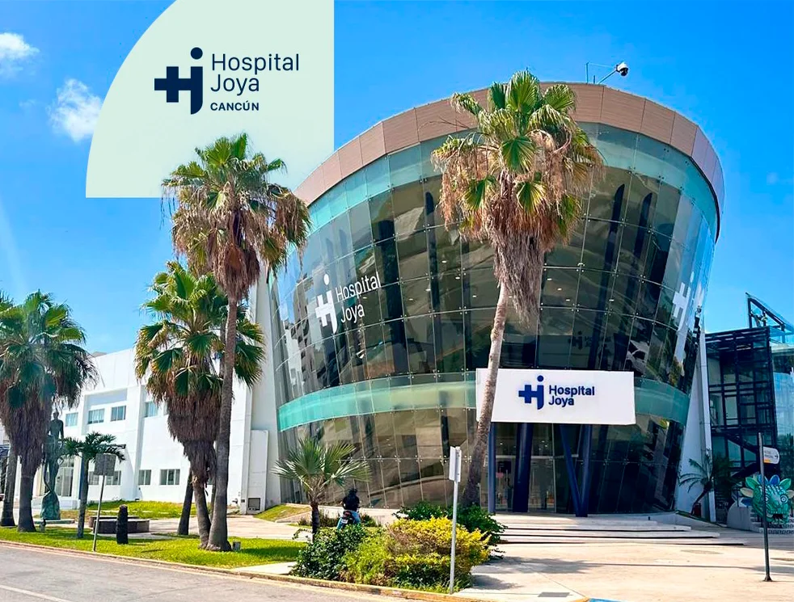
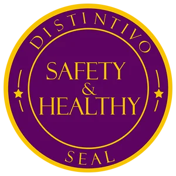
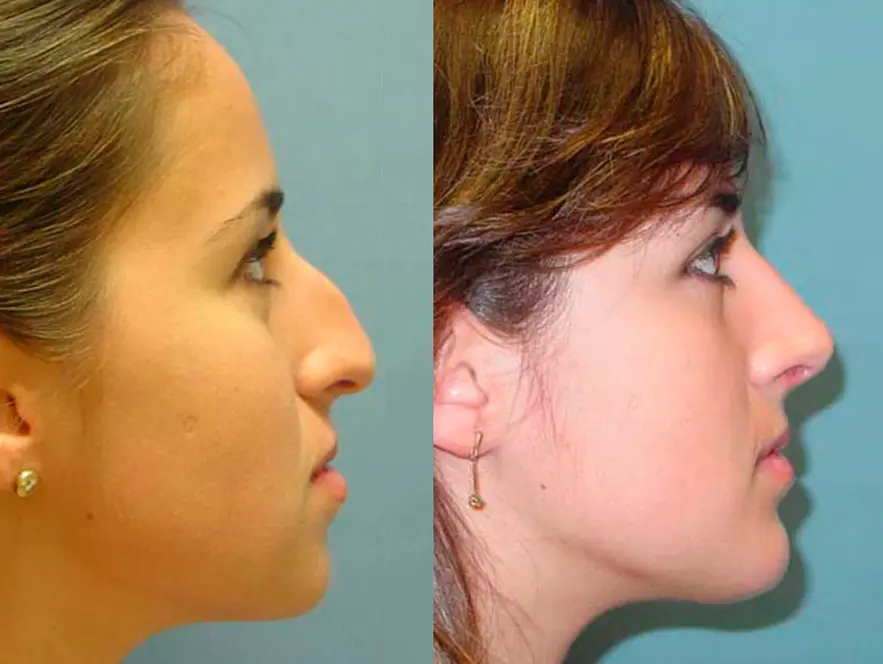
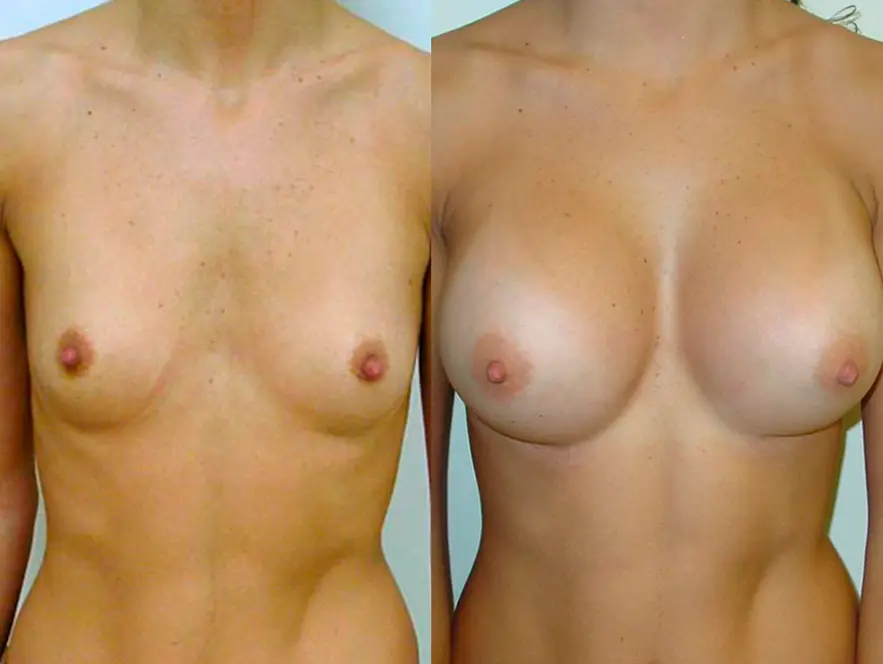
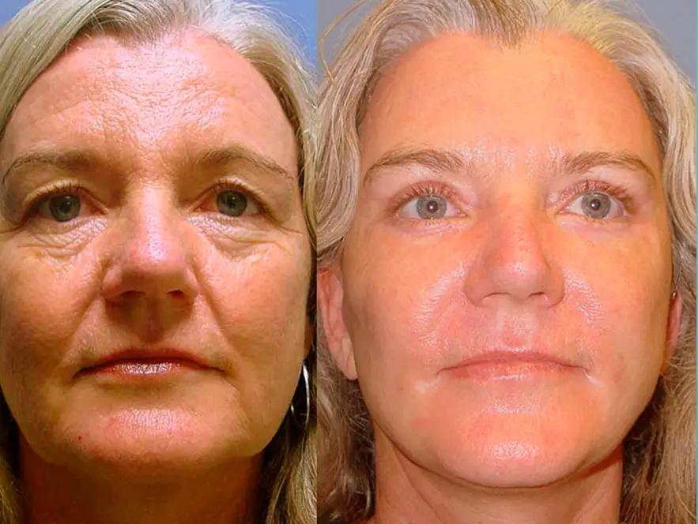
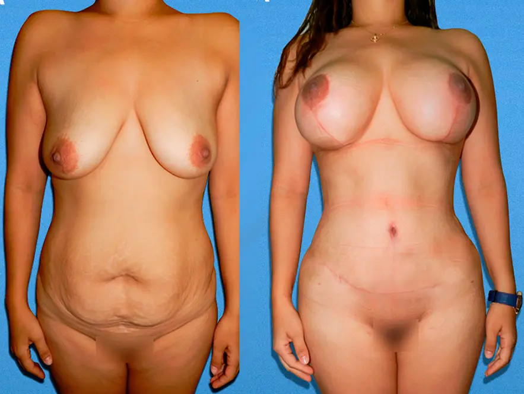

Plastic Surgery in Cancún
Achieve your aesthetic goals with confidence under the expert care of Dr. Rafael Velasco Marín, delivering natural results and world-class standards in Cancun.
Why Choose Us
World-Class Care in Cancun
Certified Artistry
Over 30 years of expertise from a globally recognized surgeon.
Up to 70% Savings
World-class results at a fraction of US/Canadian costs.
State-of-the-Art Facilities
Operate in modern, accredited surgical centers in Cancun.
Recovery in Paradise
Heal comfortably in Cancun's serene, tropical environment.
Dr. Rafael Velasco Marín Top-Rated Plastic Surgeon in Cancun
With a strong commitment to patient safety, precise technique, and an artistic eye, Dr. Velasco Marín transforms lives and delivers natural results with over 30 years of expertise.
His philosophy focuses on refinement with balance and trust, achieving outcomes that highlight your individuality and build lasting confidence.
Cosmetic Procedures in Cancun
Discover transformative results with Dr. Rafael Velasco Marín. We offer premium surgical and non-surgical treatments in Cancun, Mexico, combining medical excellence with affordable luxury care.
Tummy Tuck (Abdominoplasty)
Restore a firm, contoured silhouette with our signature abdominal rejuvenation, designed to remove excess tissue and repair muscle.
Tummy Tuck in CancunBreast Lift (Mastopexy)
Restore a youthful, uplifted shape to your breasts with natural-looking outcomes performed by expert hands in Mexico.
Learn MoreFacelift (Rhytidectomy)
Turn back the clock with a facelift in Cancun. Address wrinkles and sagging for a refreshed, youthful contour.
See ResultsRhinoplasty (Nose Job)
Improve facial harmony and breathing with a professional nose job in Cancun. Expert refinement for natural results.
Learn MoreLiposculpture
Target stubborn fat and define your silhouette with high-definition liposculpture in Cancun's top surgeon.
View PricingMommy Makeover
Restore your pre-pregnancy confidence with a tailored combination of procedures. All-inclusive packages available.
Explore PackagesBreast Implants
Achieve your ideal volume and shape with high-quality implants and Dr. Velasco's artistic approach.
Learn MoreOtoplasty (Ear Surgery)
Reshape and reposition ears to improve facial balance and self-confidence with a quick, safe procedure.
View DetailsBreast Reduction
Reduce breast size and alleviate discomfort for a more proportionate and active lifestyle.
Learn MoreWhy International Patients Choose Us?
Cancun is a world-class destination for plastic surgery in Mexico. Every year, patients from the USA and Canada visit Cancun Plastic Surgery seeking the expertise of Dr. Rafael Velasco Marín, combining affordable pricing with premium medical care.
Hospital Joya — Third-Level High Specialty
Dr. Velasco Marín operates exclusively at Hospital Joya Cancún. Opened on December 6, 2022, it stands as the absolute only high-specialty third-level clinical facility inside the hotel strip, equipped with fully functional on-site Adult Intensive Care Units (UCIA) and Neonatal critical care infrastructure.
Strategic Hotel Zone Location (Km 13)
Perfectly located at Kilometer 13 of the Cancún Hotel Zone, this state-of-the-art facility features a 24/7 advanced automated laboratory, an imaging diagnostics zone (CT / TAC scans and MRI), and a specialized hemodynamics unit. It eliminates risky post-op medical transport vectors to the downtown core.
Bilingual Post-Op Continuity & Logistics
Your immediate safety window is protected by a dedicated clinical transport infrastructure, intensive care ground fleet, and emergency air medical evacuation connectivity options. All specialized nursing care and clinical updates are managed natively in English.

Hospital Joya Cancún

Significant Cost Savings
Experience premium care at prices up to 70% lower than in the U.S. or Canada.
All-Inclusive Packages & Personalized Care
Comprehensive treatment packages with dedicated support throughout your entire journey.
World-Class Facilities
State-of-the-art hospitals and clinics equipped with advanced technology.
Private Recovery
Enjoy a private and serene recovery in a beautiful vacation destination.
Easy Accessibility
Direct flights from major international cities make travel convenient.
Medical Tourism Hub
Combine your transformation with a relaxing, restorative experience in one of the world's most beautiful locations.
Combine your transformation with a relaxing, restorative experience
in one of the world's most beautiful locations.
Discover the Cancun AdvantagePatient Stories & Testimonials
Real experiences from patients who transformed their lives under the professional care of Dr. Rafael Velasco Marín.
"Excellent service. He explained the procedure in detail, including the benefits and risks. Thank you for your patience."
"From the first contact, the experience felt professional and high-end. The staff was attentive, the clinic was immaculate, and the overall service exceeded expectations. Cancún Plastic Surgery truly delivers a premium experience."
"Superb cosmetic surgeon. I love my new thirty years younger face. Dr. Velasco Marin did a wonderful job on my face. He was a very caring doctor as well. I will gladly recommend him to anyone who is looking for a cosmetic surgeon."
"All I have to say is, Dr. Velasco is a genius, and it's been a blessing to know him for so many years, since he has saved my husband, my brother Miguel, and me many times. Only he can be so amazing at his job."
"Mis dos experiencias con el Dr, Velasco has sido excelentes, han pasado casi 15 años y lis resultados siguen siendo buenísimos. Recomendable 100x100"
"Best cosmetic surgeon and clinic in Cancun in my opinion."
Verified Safety & Results
Our surgical experience and hospital safety keep your medical outcomes completely verifiable.
Cancun Plastic Surgery Results
See real patient outcomes and surgical transformations from Dr. Rafael Velasco Marín, a leading top plastic surgeon in Cancun, Mexico. *Individual results may vary

Rhinoplasty Transformation
Natural-looking nasal refinement with perfect facial balance.

Breast Implants Results
Natural-looking enhancement with perfect proportional balance.

Facelift Rejuvenation
Youthful, refreshed appearance with natural-looking results.

Mommy Makeover Complete
Full body transformation restoring pre-pregnancy confidence.
Your Path to Transformation in Paradise
Stay informed with our latest articles on plastic surgery procedures, recovery tips, medical tourism in Cancun, and patient guides.
Tips for a Smooth Recovery After Tummy Tuck
Learn essential steps to ensure a comfortable and effective recovery process after your abdominoplasty.
Choosing the Right Breast Implant Size and Type
A comprehensive guide to understanding implant types, sizes, and profiles to achieve your desired outcome.
Your Guide to Medical Tourism in Cancun
Everything you need to know about planning your plastic surgery trip to Cancun, from logistics to recovery.
Frequently Asked Questions
Get answers to the most common questions about plastic surgery with Dr. Rafael Velasco Marín in Cancun.
Most surgical procedures require an absolute minimum stay in Cancun of 7 to 10 days post-operation to guarantee proper healing before you are safely cleared to fly back home.
The length of your stay depends on the structural extent of the surgery, ranging from 3 days for a minor bichectomy up to 10 continuous days for major interventions like a mommy makeover or circumferential tummy tuck. This timeframe is driven by post-op drain management, wound sealing speeds, and mandatory in-person follow-up clearance consultations.
Most medical travelers from the United States, Canada, and the United Kingdom do not require a specialized medical visa to undergo surgery in Mexico; a standard tourist card (FMM) obtained upon arrival is sufficient.
Visa requirements depend strictly on your country of citizenship, your passport's expiration date (which must be valid for at least six months), and your total intended duration of stay in Quintana Roo. Travelers from countries outside the visa-waiver program must apply for a formal visitor visa at a Mexican consulate prior to departure.
Ready for Your Transformation?
Schedule a confidential virtual consultation with Dr. Rafael Velasco Marín to discuss your aesthetic goals and receive a personalized treatment plan.
Book Your Consultation
Get in Touch
We're here to answer all your questions and guide you on your aesthetic journey. Reach out to our friendly team today.
Location
Jurel #61 SM3, Cancun, Quintana Roo, Mexico
Phone & WhatsApp
+52 998 411 3730